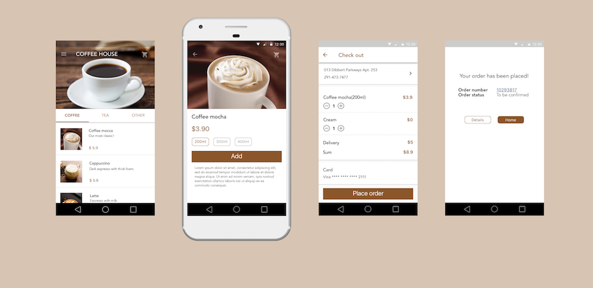

The big picture
I started with blueprint the major user journey and user goals.

This is an ecommerce design for an online coffee store.
I started with blueprint the major user journey and user goals.
Users' needs were analyzed and transformed into functional requirmenets. Those requirements were piorized.

I sketched two concepts of ordering product on the App.
After choosing the conceptual mode, I sketched storyboards and alternatives of different screens


Thare are two way for odering coffee, sugar and cream

I created a few Hi-Fi mockup.
I created an animated prototype for menu page with Axure RP.